“Chim có Tổ, Người có Tông”; “Cây có Cội, Nước có Nguồn”, đây là những câu ca dao nói lên đạo lý của con người Việt Nam đã được lưu truyền bao đời nay, cho dù xã hội có nhiều biến động và thay đổi. Vì vậy việc nhận biết về Nguồn Cội Tổ Tiên, chăm lo Phần Mộ Ông Bà là những điều nằm trong tiềm thức của mỗi Con Người Việt Nam.
Để ghi nhận về Vị Thủy Tổ đầu tiên của Dòng Họ Vũ đặt chân đến mảnh đất Làng Phú Mỹ ngày nay bằng ký ức được lưu truyền qua các thế hệ con cháu truyền miệng ghi lại cùng với những căn cứ thực tế và trên cơ sở khoa học được tính toán về thời gian, độ tuổi để dự đoán và nhận biết được Vị Thủy Tổ về đây an lạc đã có khoảng thời gian trên dưới 200 năm, tức là từ đầu Thế kỷ 19 (Khoảng từ năm 1800).
Nhìn lại quá khứ, các bậc Tiền Nhân của Họ Vũ thời ấy với bản chất văn hóa nông nghiệp là chủ yếu trong đời sống Người Việt, nên đã cần cù, chịu khó lao động và trải qua nhiều biến cố của Đất Nước nên Bộ Gia Phả có thể bị thất lạc hoặc chưa có điều kiện biên soạn Bộ Gia Phả của Dòng Họ để ghi giữ, lưu truyền lại cho hậu thế hiểu được nguồn cội và quan hệ huyết thống làm tăng lòng hiếu kính, biết ơn của Hậu Thế với các Bậc Tiền Nhân, tăng tình thân giữa các thành viên trong Họ Tộc.
Đến nay, đặc biệt là sau thời gian xây dựng lại Nhà Từ Đường Họ Vũ Làng Phú Mỹ lần 2 (năm 1999); Cụ Vũ Văn Sánh, sinh năm 1929, đời thứ 6 của Dòng Họ (Thuộc Ngành 1) bằng ký ức của mình đã ghi chép, hệ thống lại về nguồn cội Dòng Họ Vũ và qua sưu tầm, tìm hiểu các Vị Cao Niên trong Họ Tộc để xác định những diễn tiến về nguồn cội của Dòng Họ ngày nay với hy vọng tổ chức biên tập Bộ Gia Phả của Họ Tộc để lưu truyền lại Hậu Thế.
Thời gian cứ thế trôi qua như không hề chờ đợi một ai và một sự việc nào, Cụ Vũ Văn Sánh và hầu hết các Bậc Cao Niên Trong Họ đã qua đời, thế hệ tiếp nối (Đời thứ 7) cũng đã sang tuổi “Xưa nay hiếm”. Do đó cần phải biên tập ngay Bộ Gia Phả để lưu giữ lại Nguồn Cội Dòng Họ cho Hậu Thế, dù biết rằng biên tập Bộ Gia Phả hoàn chỉnh cần phải có thời gian, nhân lực, vật lực và những kiến thức chuyên môn nhất định. Vì vậy việc biên tập Bộ Gia Phả Dòng Họ là việc làm hết sức cần thiết hiện nay.
Nội dung Bộ Gia Phả Dòng Họ Vũ Làng Phú Mỹ được biên tập trên cơ sở tổng hợp các dữ liệu quí được con cháu ghi lại, sưu tầm. Xác định về thời gian, danh tính, hệ phả trong quá khứ và hiện tại để lưu giữ lại làm căn cứ tiếp nối và truyền dẫn cho các thế hệ tương lai.
Nội dung gồm:
Phần 1: Lời mở đầu.
Phần 2: Khái quát về Nguồn Gốc, thời gian hình thành Dòng Họ Vũ Tại Làng Phú Mỹ.
Phần 3: Quá trình phát triển của Dòng Họ với xây dựng Quê Hương.
Phần 4:Hệ Phả (Chi tiết các Ngành) của Dòng Họ.
Phần 5: Một số hình ảnh lưu giữ về Dòng Họ.
Trong điều kiện biên tập Bộ Gia Phả Dòng Họ Vũ Làng Phú Mỹ (Không có Gia Phả Gốc) đây là việc làm hết sức khó khăn nên không tránh khỏi những hạn chế và thiếu sót, đồng thời công việc xây dựng và cập nhật Bộ Gia Phả lại là công việc phải tiến hành thường xuyên, liên tục. Rất mong toàn thể Bà Con Trong Họ Tộc cùng chia sẻ và tiếp tục bổ sung để Bộ Gia Phả Họ Vũ Làng Phú Mỹ ngày thêm hoàn chỉnh.
Kính chào thân ái. BAN BIÊN TẬP
PHẦN 2: KHÁI QUÁT VỀ NGUỒN GỐC, THỜI GIAN HÌNH THÀNH
DÒNG HỌ VŨ TẠI LÀNG PHÚ MỸ
Qua ký ức của Con Cháu Hậu Duệ, trải qua nhiều đời được lưu truyền và ghi lại để biết về Vị Thủy Tổ Vũ Tính Húy Tạo là người đầu tiên đến mảnh đất Làng Phú Mỹ xưa kia cùng lập Gia Đình với Vị Thủy Tổ Bà: Phạm Thị Hạnh thiên cư lập nghiệp và sinh đẻ con cháu được lưu truyền qua nhiều thế hệ cho đến ngày nay đã có khoảng thời gian trên dưới 200 năm, tức là từ đầu Thế Kỷ 19 (Khoảng từ năm 1800).
Nguồn gốc phát tích của Dòng Họ Vũ Làng Phú Mỹ được khởi đầu từ đời thứ nhất: Vị Hiển Cao Tổ Khảo Vũ Tính Húy Tạo (Ngày giỗ 21 tháng chạp âm lịch hàng năm) cùng Vị Hiển Cao Tổ Tỷ Phạm Thị Hạnh (Ngày giỗ 01 tháng 8 âm lịch). Hai vị Thủy Tổ đã sinh hạ được 01 người con trai (Đời thứ 2): Hiển Tăng Tổ Khảo Vũ Tính Húy Tiến (Còn có tên Vũ Đức Tiến - Ngày giỗ 02 tháng 02 âm lịch).
Vị Hiển Tăng Tổ Khảo Vũ Tính Húy Tiến lập gia đình cùng hai Vị Tổ Bà: Hiển Tăng Tổ Tỷ Vũ Gia (Chính thất) Phạm Thị Hằng và Hiển Tăng Tổ Tỷ Vũ Gia (Trắc thất, không rõ tên) đã sinh hạ được 05 người con trai nối dõi tông đường của Dòng Họ Vũ Làng Phú Mỹ ngày nay (Đời thứ 3).
Tổ Bà Chính Thất Phạm Thị Hằng
Ngày giỗ 19 tháng 3 âm lịch, sinh hạ 04 con trai:
Cụ Vũ Khơi (Giỗ 21/10) - Tổ Ngành I
Cụ Vũ Rỵ - Tổ Ngành II
Cụ Vũ Doãn - Tổ Ngành III
Cụ Vũ Húy Đinh - Tổ Ngành IV
Tổ Bà Trắc Thất (không rõ tên)
Ngày giỗ 02 tháng 8 âm lịch, sinh hạ 01 con trai:
Cụ Vũ Công Trứ (Giỗ 24 tháng chạp) - Tổ Ngành V
Đó là Nguồn Gốc Dòng Họ Vũ Làng Phú Mỹ chính thức được hình thành từ đây và khởi đầu qua các Vị Tiền Nhân nối truyền để có được một Dòng Họ đông đúc, gia phong như hiện nay. Đến ngày nay Họ Vũ Làng Phú Mỹ đã quy tụ, xây dựng, nâng cấp khu Lăng Mộ Tổ, xây mới lại Nhà Từ Đường khang trang, sạch đẹp và hàng năm tổ chức Lễ Giỗ Tổ, đón tiếp Con Cháu Hậu Duệ gần xa về Thăm Quê, Bái Tổ càng khẳng định Nguồn Cội của Dòng Họ Vũ đã gắn bó với mảnh đất Làng Phú Mỹ được lưu truyền đến ngày nay thuộc thế hệ Con Cháu Hậu Duệ (Đời thứ 9) vào năm Quý Mão 2023 của Thế Kỷ 21.
Trên cơ sở dữ liệu hiện có được xác định về Tổ Quán và Vị Thủy Tổ đầu tiên của Dòng Họ Vũ Làng Phú Mỹ, mặc dù chưa thật toại nguyện với yêu cầu tuyệt đối chính xác, đầy đủ về thời gian, danh tính và còn một số chi tiết khác, nhưng thế hệ Con Cháu Hậu Duệ hôm nay rất tự hào có được nguồn dữ liệu quí để mọi người nhận biết được về Nguồn Cội, thời gian Dòng Họ Vũ đã hiện diện trên mảnh đất Quê Hương Làng Phú Mỹ thân yêu qua nhiều Thế Kỷ đến ngày nay.
PHẦN 3: QUÁ TRÌNH PHÁT TRIỂN CỦA DÒNG HỌ
VỚI XÂY DỰNG QUÊ HƯƠNG
1. Sự Phát Triển Về Số Lượng Của Dòng Họ:
Như trình bày ở phần trên, Vị Thủy Tổ Vũ Tính Húy Tạo là người khởi đầu đặt chân đến Làng Phú Mỹ ngày ấy với mưu sinh và tạo lập gia đình thiên cư lập nghiệp cùng với Vị Thủy Tổ Bà Phạm Thị Hạnh, sinh được một người con trai duy nhất là Vị Tổ Vũ Tính Húy Tiến (Còn có tên Vũ Đức Tiến - Đời thứ 2), chính Người đã kế thừa, nối dõi và phát triển Dòng Họ Vũ đến ngày nay được hình thành 05 Ngành Họ và hàng ngàn con cháu nội, ngoại đến đời thứ 9 hiện nay đang sinh sống, công tác tại địa danh Làng Phú Mỹ - Xã Bình Minh - Huyện Kiến Xương - Tỉnh Thái Bình và các Vùng, Miền trên cả Nước.
Nhà Từ Đường Của Dòng Họ Vũ Làng Phú Mỹ được xây dựng và lưu truyền cùng với quá trình phát tích của Dòng Họ Vũ Làng Phú Mỹ, tính đến ngày nay (Tức năm 2023 của thế kỷ 21), trải qua thời gian trên dưới 200 năm, đã được xây dựng lại lần thứ 3; Hai lần đầu có thiết kế và diện tích giống nhau theo hướng Bắc, được tọa lạc trên phần đất của Cụ Vũ Văn Sánh; Lần thứ 3 được Khởi Công Xây Dựng ngày 02 tháng 10 năm 2020 (Tức ngày 16 tháng 8 năm Canh Tý) theo hướng Tây... được tọa lạc trên phần đất của Ông Vũ Anh Miệu và Ông Vũ Xuân Hướng (Ngành I).
Hiện nay, Ông Vũ Anh Miệu đang cư trú và sinh sống cùng Gia Đình tại Thành Phố Vũng Tàu, Tỉnh Bà Rịa - Vũng Tàu nên ngay khi Cụ Vũ Văn Sánh từ trần năm 2010, Ông Vũ Anh Miệu đã báo cáo và xin ý kiến Họ Tộc và đã được các Thành Viên Trong Họ chấp thuận chuyển giao công việc của Dòng Họ cho Ông Vũ Xuân Hướng đảm nhận thay thế Ông Vũ Anh Miệu - Trưởng Họ, với lý do sống xa Quê.
2. Đặc Điểm Và Truyền Thống Cách Mạng Của Dòng Họ Với Quê Hương.
Quá trình phát triển Dòng Họ qua các thế hệ Con Cháu từ đời thứ 5, thứ 6 đã được nuôi dưỡng lớn khôn, trưởng thành và đặc biệt là từ đời thứ 7 Dòng Họ đã phát triển toàn diện về mọi mặt (Cả về số lượng và chất lượng). Đây là bước ngoặt thay đổi căn bản của cả Dòng Họ ở cuối thế kỷ 20. Do tình hình Đất Nước có nhiều biến động, đặc biệt là từ khi có Đảng Cộng Sản Việt Nam ra đời năm 1930, lớp lớp Con Cháu Họ Vũ đều đi theo Đảng và trực tiếp tham gia các hoạt động Cách Mạng tại địa phương và tham gia kháng chiến chống thực dân Pháp, tiêu biểu là Liệt Sĩ Vũ Thang - Ngành 5 và nối tiếp các thế hệ Con Cháu đến ngày nay luôn đồng hành cùng Quê Hương, Đất Nước...
Dòng Họ Vũ cống hiến 03 người con ưu tú đã hy sinh cho sự nghiệp giải phóng Dân Tộc đó là: Liệt Sĩ Vũ Văn Xướng; Sinh năm 1940 - Ngành 3; Liệt Sĩ Vũ Xuân Đáp; Sinh năm 1939 và Liệt Sĩ Vũ Ngọc Thừ; Sinh năm 1953 - Ngành 4 đã hy sinh tại chiến trường Miền Nam. Từ sau ngày Giải Phóng Miền Nam Thống Nhất Đất Nước, Con Cháu Họ Vũ đã có thêm điều kiện thuận lợi được học hành thành đạt có được những Học Vị như Tiến Sĩ, Thạc Sĩ, Kỹ Sư, Cử Nhân… và giữ nhiều cương vị trọng trách trong Xã Hội...
Tóm lại đặc điểm của Dòng Họ Vũ mang bản chất Nông Dân cần cù, chất phát, chịu khó làm ăn, có chí tiến thủ. Vì vậy đã có thiện cảm và thiện chí đến với Cách Mạng... Ngày nay đã có nhiều thế hệ Con Cháu Họ Vũ có những đóng góp nhất định cho Sự Nghiệp Cách Mạng Của Dân Tộc, Cho Quê Hương. Việc tổng hợp, biên tập Bộ Gia Phả Dòng Họ là việc làm cần thiết và có ý nghĩa trước hết là thắt chặt tình cảm Bà Con Trong Họ Tộc...
PHẦN 4: HỆ PHẢ
Phần Hệ Phả là sự tổng hợp theo diễn tiến trình tự cụ thể từ Vị Thủy Tổ khởi đầu Nguồn Gốc Dòng Họ đến các Chi, Ngành, Con Cháu Hậu Duệ qua nhiều thế hệ được lưu truyền tại Làng Phú Mỹ - Xã Bình Minh - Huyện Kiến Xương - Tỉnh Thái Bình ngày nay.
ĐỜI THỨ NHẤT
Vị Hiển Cao Tổ Khảo Vũ Tính Húy Tạo (Ngày giỗ 21 tháng chạp âm lịch hàng năm) cùng Vị Hiển Cao Tổ Tỷ Phạm Thị Hạnh (Ngày giỗ 01 tháng 8 âm lịch).
Hai Vị Thủy Tổ đã sinh hạ được 01 người con trai (Đời thứ 2): Vị Hiển Tăng Tổ Khảo Vũ Tính Húy Tiến (Còn có tên Vũ Đức Tiến - Ngày giỗ 02 tháng 02 âm lịch).
ĐỜI THỨ HAI
Vị Hiển Tăng Tổ Khảo Vũ Tính Húy Tiến (Còn có tên Vũ Đức Tiến - Ngày giỗ 02 tháng 02 âm lịch).
Vị Hiển Tăng Tổ Khảo Vũ Tính Húy Tiến lập gia đình cùng Hai Vị Tổ Bà: Vị Hiển Tăng Tổ Tỷ Vũ Gia (Chính thất) Phạm Thị Hằng và Vị Hiển Tăng Tổ Tỷ Vũ Gia (Trắc thất, không rõ tên) đã sinh hạ được 05 người con trai nối dõi Tông Đường và Là 05 Ngành Thuộc Dòng Họ Vũ Làng Phú Mỹ Ngày Nay (Đời thứ 3).
ĐỜI THỨ BA
Vị Hiển Tăng Tổ Tỷ Vũ Gia (Chính thất) Phạm Thị Hằng, ngày giỗ 19 tháng 3 âm lịch đã sinh hạ được 04 người con trai (Đời thứ 3); Đó là:
1. Cụ Vũ Khơi (Ngày giỗ 21 tháng 10 âm lịch) - Là Cụ Tổ Của Ngành I.
2. Cụ Vũ Rỵ (Ngày giỗ ……… hàng năm) - Là Cụ Tổ Của Ngành II.
3. Cụ Vũ Doãn (Ngày giỗ …… hàng năm) - Là Cụ Tổ Của Ngành III.
4. Cụ Vũ Húy Đinh (Ngày giỗ 14 tháng 4 âm lịch) - Là Cụ Tổ Ngành IV.
* Vị Hiển Tăng Tổ Tỷ Vũ Gia (Trắc thất, không rõ tên), ngày giỗ 02 tháng 8 âm lịch đã sinh hạ được 01 người con trai (Đời thứ 3). Đó là:
5. Cụ Vũ Công Trứ (Ngày giỗ 24 tháng chạp) - Là Cụ Tổ Ngành V.
CHI TIẾT CÁC NGÀNH
NGÀNH THỨ NHẤT: CỤ VŨ KHƠI (ĐỜI THỨ 3)
Ngày giỗ 21/10 âm lịch. Sinh được 02 con trai: Cụ Vũ Tính Húy Đợt và Cụ Vũ San.
1. Cụ Hiển Tổ Khảo Lão Nhiên Vũ Tính Húy Đợt & Nguyễn Thị Huy Lượng
Cụ Vũ Thông (Mất sớm lúc 22 tuổi, còn gọi là Mãnh Tổ)
Cụ Vũ Thị Mừng (Mất sớm, còn gọi là Bà Cô)
1.1. Cụ Vũ Quýnh & Trần Thị Cáy (Đời 5)
Sinh 07 người con (Đời 6):
1.1.1. Cụ Vũ Song & Nguyễn Thị Nụ
1.1.1.1. Ông Vũ Anh Miệu (Đích tôn) & Nguyễn Thị Kiều Oanh (Đời 7)
1.1.1.1.1. Vũ Thị Hoài Thu (1976)
1.1.1.1.2. Vũ Thị Phương Thảo (1979)
1.1.1.1.3. Vũ Quốc Thịnh & Trịnh Thị Hồng Liên
1.1.1.1.3.1. Vũ Mai Anh (2010)
1.1.1.1.3.2. Vũ Quốc Bình (2018 - Đích tôn đời 9)
1.1.1.2. Ông Vũ Mão & Đỗ Thị Triều
1.1.1.2.1. Vũ Thị Huyền (1983)
1.1.1.2.2. Vũ Văn Linh (1986)
1.1.2. Cụ Vũ Văn Sính & Nguyễn Thị Chè / Nguyễn Thị Sự
1.1.2.1. Bà Vũ Thị Miêng (1948)
1.1.2.2. Bà Vũ Thị Nhiệm (1951)
1.1.3. Cụ Bà Vũ Thị Mạy (1926-2016)
1.1.4. Cụ Vũ Văn Sánh & Đỗ Thị Mùi
1.1.4.1. Bà Vũ Thị Luy (1952)
1.1.4.2. Bà Vũ Thị Nhâm (1955)
1.1.4.3. Bà Vũ Thị Dịu (1957)
1.1.4.4. Bà Vũ Hồng Chiên (1960)
1.1.4.5. Ông Vũ Đức Tuệ & Lương Thị Tuyết
1.1.4.5.1. Vũ Đức Toàn & Bùi Thị Thanh Hương
1.1.4.5.1.1. Vũ Đức Anh (2019)
1.1.4.5.2. Vũ Thị Thanh Thúy (2006)
1.1.4.6. Ông Vũ Văn Duẩn & Vũ Thị Hoài Hương
1.1.4.6.1. Vũ Đức Du (1995)
1.1.4.6.2. Vũ Hồng Nhung (2002)
1.1.4.7. Ông Vũ Xuân Hướng & Vũ Thị Ngân / Nguyễn Đắc Thị Thủy
1.1.4.7.1. Vũ Xuân Lộc (1990)
1.1.4.7.2. Vũ Việt Hà (1992)
1.1.4.7.3. Vũ Thùy Trang (2004)
1.1.5. Cụ Vũ Hữu Sóng & Nguyễn Thị Tuyết
1.1.5.1. Ông Vũ Quốc Doanh & Nguyễn Thị Quyền
1.1.5.1.1. Vũ Thị Như Quỳnh (Hương) (1977)
1.1.5.1.2. Vũ Thị Thu Hường (1979)
1.1.5.1.3. Vũ Ngọc Hiển & Nguyễn Thị Thảnh
1.1.5.1.3.1. Vũ Đức Anh (2013)
1.1.5.1.3.2. Vũ Việt Anh (2017)
1.1.5.1.4. Vũ Thị Hồng Hạnh (1987)
1.1.5.2. Ông Vũ Văn Duy & Nguyễn Thị Miền
1.1.5.2.1. Vũ Xuân Thắng & Phạm Thị Thanh Thủy
1.1.5.2.1.1. Vũ Gia Bảo (2009)
1.1.5.2.1.2. Vũ Bảo Nam (2013)
1.1.5.2.2. Vũ Thị Thảo (1986)
1.1.5.3. Bà Vũ Thị Dung (1962)
1.1.5.4. Ông Vũ Văn Dương & Khuất Thị Thân
1.1.5.4.1. Vũ Nam Thanh (1996)
1.1.5.4.2. Vũ Nam Huy (2002)
1.1.5.5. Bà Vũ Thị Hồng Duyên (1967)
1.1.5.6. Ông Vũ Ngọc Dưỡng & Nguyễn Thị Nết / Mai Thị Hương
1.1.5.6.1. Vũ Tiến Thành (2002)
1.1.5.6.2. Vũ Việt Hoàng (2015)
1.1.5.7. Ông Vũ Ngọc Dũng & Bùi Thị Thêm
1.1.5.7.1. Vũ Nam Thái (1995)
1.1.5.7.2. Vũ Quang Trung (2011)
1.1.5.8. Ông Vũ Thế Dư & Trầm Thị Minh Châu
1.1.5.8.1. Vũ Minh Quang (2005)
1.1.6. Cụ Vũ Thị Lan (1934-2009)
1.1.7. Cụ Vũ Thị Mơ (1938)
2. Cụ Vũ San
Cụ Vũ Ưng (Mất sớm)
NGÀNH THỨ HAI: CỤ VŨ RỴ (ĐỜI THỨ 3)
Sinh 03 con trai: Cụ Vũ Rạng, Cụ Vũ Kỳ, Cụ Vũ Ky.
1. Cụ Vũ Rạng
1.1. Cụ Vũ Vóc
1.1.1. Cụ Vũ Nhiễu (Giai) & Trần Thị Nhật
1.1.1.1. Bà Vũ Thị Nguyệt (1958)
1.1.1.2. Bà Vũ Thị Nga (1960)
1.1.1.3. Bà Vũ Thị Khoai (1962)
1.1.1.4. Ông Vũ Chuyển & Nguyễn Thị Cúc
1.1.1.4.1. Vũ Thị Hương (1987)
1.1.1.4.2. Vũ Văn Phương & Trần Thị Thành Đông
1.1.1.4.2.1. Vũ Thị Trâm Anh (2019)
1.1.1.4.2.2. Vũ Duy Anh (2022)
1.1.1.5. Ông Vũ Văn Vận & Nguyễn Thị Lưu
1.1.1.5.1. Vũ Thị Luyến (1993)
1.1.1.5.2. Vũ Văn Thành (1995)
1.1.1.6. Ông Vũ Văn Điều & Nguyễn Thị Thủy
1.1.1.6.1. Vũ Thị Hoa (1993)
1.1.1.6.2. Vũ Thị Mai (1995)
1.1.1.6.3. Vũ Văn Hòa (1997)
1.1.1.7. Bà Vũ Thị Thêm (1977)
1.2. Cụ Vũ Thực & Đỗ Thị Na
1.2.1. Cụ Vũ Văn Kiểm & Trần Thị Miên / Phạm Thị Phấn
1.2.1.1. Ông Vũ Văn Canh & Khúc Thị Sen
1.2.1.1.1. Vũ Mạnh Cường (1992)
1.2.1.1.2. Vũ Mạnh Việt (1999)
1.2.1.2. Ông Vũ Văn Chất & Nguyễn Thị Gái
1.2.1.2.1. Vũ Thị Thắm (1988)
1.2.1.2.2. Vũ Mạnh Đức (1992, Vợ: Đỗ Thị Huyền Trang)
1.2.1.3. Bà Vũ Thị Phương (1968)
1.2.1.4. Ông Vũ Văn Phi & Vũ Thị Thêm
1.2.1.4.1. Vũ Thị Huyền Trang (2002)
1.2.1.4.2. Vũ Thị Ngọc Anh (2007)
1.2.1.4.3. Vũ Minh Phúc (2016)
1.2.2. Cụ Vũ Thị Rần
1.2.3. Cụ Vũ Thị Mùi
2. Cụ Vũ Kỳ & Phạm Thị Nhuận
2.1. Cụ Vũ Văn Quất & Vũ Thị Sửu
2.1.1. Cụ Vũ Ngọc Bích & Trần Thị Xuân
2.1.1.1. Bà Vũ Thị Hưởng (1946)
2.1.1.2. Bà Vũ Thị Thư (1950)
2.1.1.3. Bà Vũ Thị Muống (1955)
2.1.1.4. Bà Vũ Thị Sắn (1958)
2.1.1.5. Ông Vũ Ngọc Nhi (1960 - 1989)
2.1.1.6. Ông Vũ Kim Đồng & Lý Thị Loan
2.1.1.6.1. Vũ Lý Thanh Hiền (1999)
2.1.1.6.2. Vũ Hùng Phong (2008)
2.1.1.7. Vũ Thị Sâm (1968)
6 Cụ con gái: Luyện, Thăng (Co), Vàng cả (Cầm), Thưởng (Phú), Vàng 2 (Tửu), Hốt.
3. Cụ Vũ Ky
Cụ Vũ Giữa và Cụ Vũ Câu (Mất sớm)
NGÀNH THỨ BA: CỤ VŨ DOÃN (ĐỜI THỨ 3)
1. Cụ Vũ Phấn
1.1. Cụ Vũ Chấn
Không sinh con.
1.2. Cụ Vũ Soạn
1.2.1. Cụ Vũ Thị Hoa
1.3. Cụ Vũ Nhương & Phạm Thị Nhỡ
1.3.1. Cụ Vũ Thị Hường
1.3.2. Cụ Vũ Văn Xướng (Liệt sỹ hi sinh năm 1975)
1.3.3. Cụ Vũ Thị Gái
1.3.4. Cụ Vũ Thị Xuân
NGÀNH THỨ TƯ: CỤ VŨ HÚY ĐINH (ĐỜI THỨ 3)
Sinh 02 con trai là Cụ Vũ Văn Bính và Cụ Vũ Văn Hợi.
1. Cụ Vũ Văn Bính & Vũ Thị Bõn
1.1. Cụ Vũ Thị Sửu
1.2. Cụ Vũ Thị Beo
1.3. Cụ Vũ Văn Bào & Đỗ Thị Gái / Nguyễn Thị Phấn
1.3.1. Cụ Bà Vũ Thị Thảo (1933)
1.3.2. Cụ Bà Vũ Thị Sẹo (1936)
1.3.3. Cụ Vũ Xuân Đáp (Liệt Sĩ) & Trần Thị Nhàn
1.3.3.1. Ông Vũ Văn Báo & Nguyễn Thị Ngọt
Vũ Thị Dung, Vũ Thị Dinh
1.3.3.2. Bà Vũ Thị Nhạn (1964)
1.3.3.3. Ông Vũ Văn Đăng & Đoàn Thị Bé
1.3.3.3.1. Vũ Anh Vũ (1993, Vợ: Nguyễn Thị Phương Hiếu)
1.3.4. Cụ Vũ An Ninh & Đặng Thị Thọ
1.3.4.1. Vũ Văn An & Chu Thị Dương
1.3.4.1.1. Vũ Văn Anh (2007)
1.3.4.2. Vũ Công Yên & Nguyễn Thị Ngọc Tuệ
1.3.4.2.1. Vũ Thị Minh Tâm (2004)
1.3.4.2.2. Vũ Khánh Duy (2007)
1.3.5. Cụ Vũ Thị Hốt (1949)
1.3.6. Cụ Vũ Thị Tốt (1951)
1.3.7. Cụ Vũ Xuân Tường & Nguyễn Thị Cúc
1.3.7.1. Ông Vũ Đình Toàn & Dương Thị Thúy Hạnh
1.3.7.1.1. Vũ Thị Ngọc Diệp (2009)
1.3.7.1.2. Vũ Đình Phong (2011)
1.3.7.2. Ông Vũ Đình Quang & Nguyễn Thúy Quỳnh
Vũ Thị Nhã Linh (2010)
1.3.8. Cụ Vũ Đình Xuân & Nguyễn Thị Ngọc
1.3.8.1. Ông Vũ Huy Bình & Nguyễn Thị Vân Anh
1.3.8.1.1. Vũ Minh Phúc (2017)
1.3.8.1.2. Vũ Minh Đức (2020)
1.3.9. Cụ Vũ Thị Hải (1959)
1.3.10. Cụ Vũ Đức Hậu & Trần Thị Hòa
1.3.10.1. Ông Vũ Đại Biên & Phạm Thị Hải
1.3.10.1.1. Vũ Thị Kim Ngân (2013)
1.3.10.1.2. Vũ Thị Kim Khánh (2019)
Bà Vũ Thị Thuận Yến
1.3.11. Cụ Vũ Thị Phương (1965)
1.4. Cụ Vũ Văn Cổn & Trần Thị Riệm
1.4.1. Cụ Vũ Văn Cảnh & Đoàn Thị Hiên
1.4.1.1. Ông Vũ Văn Thanh & Đỗ Thị Hà
1.4.1.1.1. Vũ Văn An (2006)
1.4.1.2. Bà Vũ Thị Hà (1972)
1.4.1.3. Bà Vũ Thị Hằng (1974)
1.4.1.4. Bà Vũ Thị Hoài (1976)
1.4.2. Cụ Vũ Văn Trang & Đỗ Thị Tần
1.4.2.1. Ông Vũ Văn Long & Phạm Thị Lương
1.4.2.1.1. Vũ Văn Huy (2007)
1.4.2.1.2. Vũ Ngọc Hoàng (2012)
1.4.2.2. Ông Vũ Văn Nam & Đặng Thị Vỹ
1.4.2.2.1. Vũ Ninh Giang (2008)
1.4.2.2.2. Vũ Trường Sơn (2011)
1.4.2.3. Ông Vũ Văn Hùng & Vũ Thị Quyên
1.4.2.3.1. Vũ Kim Anh (2004)
1.4.2.3.2. Vũ Hoài Phương (2010)
1.4.3. Cụ Vũ Văn Bom (Mất sớm)
1.4.4. Cụ Vũ Duy Hiền & Trần Thị Huệ
1.4.4.1. Ông Vũ Văn Lương & Trần Thị Vân
1.4.4.1.1. Vũ Hoài Linh (2007)
1.4.4.1.2. Vũ Kim Ngân (2013)
1.4.4.2. Bà Vũ Thị Hòa (1982)
1.4.5. Cụ Vũ Thị Rốc (Mất sớm)
1.4.6. Cụ Vũ Ngọc Thừ (Liệt sĩ chống Mỹ)
1.4.7. Cụ Vũ Ngọc Thư & Bùi Thị Năm
1.4.7.1. Bà Vũ Thị Huyền (1984)
1.4.7.2. Ông Vũ Đình Thi & Nguyễn Thị Tâm
1.4.7.2.1. Vũ Thị Phương Linh (2016)
1.4.7.2.2. Vũ Gia Bảo (2018)
1.4.8. Cụ Vũ Thị Dậu (1957)
1.4.9. Cụ Bà Vũ Thị Vân (1959)
1.5. Cụ Vũ Thị Năm
1.6. Cụ Vũ Thị Sáu
1.7. Cụ Vũ Thị Bảy
1.8. Cụ Vũ Thị Tám
2. Cụ Vũ Quý Hợi & Nguyễn Thị Sen
2.1. Cụ Vũ Rự & Nguyễn Thị Tư
2.1.1. Cụ Vũ Văn Niết & Vũ Thị Thanh Hải / Đặng Thị Phách
2.1.1.1. Ông Vũ Thanh Tân & Đặng Thị Hồng Liên
2.1.1.1.1. Chị Vũ Hà Phương (1996)
2.1.1.1.2. Anh Vũ Việt Thắng (2004)
2.1.1.2. Ông Vũ Minh Tiến & Nguyễn Thị Chín
2.1.1.2.1 Anh Vũ Hồng Quân (1994)
2.1.1.3 Bà Vũ Thị Hoa (1976)
2.1.1.4 Bà Vũ Thị Huyền (1978)
2.2. Cụ Vũ Văn Mậu & Vũ Thị Tẽo
2.2.1. Cụ Vũ Khắc Điệp & Lưu Thị Bộ
2.2.1.1. Bà Vũ Thị Tuyết (Mất sớm)
2.2.1.2. Bà Vũ Thị Dung (1972)
2.2.1.3. Ông Vũ Ba Lê & Phạm Thị Lược
2.2.1.1.1. Chị Vũ Thị Bình Dương (2001)
2.2.1.1.2. Vũ Tùng Dương (2005)
2.2.1.4. Bà Vũ Thị Như (1981)
2.2.2. Cụ Vũ Văn Nhuận (Mất sớm)
2.2.3. Cụ Vũ Thành Dũng & Nguyễn Thị Niên
2.2.3.1. Ông Vũ Mạnh Cường & Nguyễn Thị Hồng Hạnh
2.2.3.1.1. Vũ Thảo Nhi (2015)
2.2.3.1.2. Vũ Nguyên Khôi (2017)
2.2.3.2. Ông Vũ Thanh Mạnh & Nguyễn Thị Thịnh
2.2.3.2.1. Vũ Thành Minh & Vũ Hoàng Quế Lâm
Vũ Thảo Nhi (2021)
2.2.3.2.2. Vũ Minh Quang (2007)
2.2.3.3. Bà Vũ Thị Thanh Hương
2.2.3.4. Bà Vũ Thị Hảo (1980)
2.2.4. Cụ Vũ Thị Hiên (1954)
2.2.5. Cụ Vũ Văn Hưng & Đào Thị Xuân
2.2.5.1. Bà Vũ Thị Thùy (1979)
2.2.5.2. Bà Vũ Thị Thanh (1983)
2.2.5.3. Ông Vũ Văn Yên & Đồng Thị Diệu Linh
2.2.5.1.1. Vũ Thu Trang (2015)
2.2.5.1.2. Vũ Thanh Tùng (2020)
2.2.5.1.3. Vũ Quang Huy (2023)
2.2.5.4. Bà Vũ Thị Yến (1988)
2.2.6. Cụ Vũ Ngọc Huynh & Vũ Minh Lý
2.2.6.1. Bà Vũ Thị Vân Anh (1986)
2.2.6.2. Ông Vũ Thế Anh & Nguyễn Thị Ngọc Diễm
2.2.6.2.1. Vũ Hà Phương (2011)
2.2.6.2.2. Vũ Thiên Phúc (2015)
2.2.7. Cụ Vũ Thị Phượng (1960)
2.2.8. Cụ Vũ Quốc Bường & Bùi Thị Huê
2.2.8.1. Bà Vũ Thị Minh Huệ (1993)
2.2.8.2. Bà Vũ Thị Minh Anh (1997)
2.3. Cụ Vũ Văn Phát & Phạm Thị Hồng
2.3.1. Cụ Vũ Văn Diệm (Mất sớm)
2.3.2. Cụ Vũ Thế Truyền & Ngô Thị Kim Cúc
2.3.2.1. Ông Vũ Ngọc Anh (Tuấn) & Trần Thị Băng
2.3.2.1.1. Vũ Lâm Phương (2001)
2.3.2.1.2. Vũ Lâm Nguyên (2008)
2.3.2.2 Bà Vũ Thị Tuyết Lan (1982)
2.3.3. Cụ Vũ Thị Hải (Mất sớm)
2.3.4. Cụ Vũ Thị Đức (1956)
2.3.5. Cụ Vũ Thế Triển & Nguyễn Thị Minh Thư
2.3.5.1. Ông Vũ Tùng Lâm & Nguyễn Thủy Tiên
2.3.5.1.1. Vũ Khôi Nguyên (2013)
2.3.5.1.2. Vũ Đỗ Bảo An (2017)
2.3.5.1.3. Vũ Đỗ Phúc Minh (2020)
2.3.5.2. Ông Vũ Quang Anh & Phạm Hồng Hạnh / Nguyễn Thị Nhung
2.3.5.2.1 Chị Vũ Kim Ngân (2016)
2.4. Cụ Vũ Văn Rật & Phạm Thị Mỡi / Phạm Thị Xuân
2.4.1. Cụ Vũ Thị Nâng (1957)
2.4.2. Cụ Vũ Thị Ngọc (1959)
2.4.3. Cụ Vũ Thị Rậu (1964)
2.4.4. Cụ Vũ Văn Định (mất sớm)
2.4.5. Cụ Vũ Thị Sinh (1974)
2.4.6. Cụ Vũ Văn Mừng & Phạm Thị Ngọc
2.4.6.1. Bà Vũ Thị Hoàng Anh (2001)
2.4.6.2. Ông Vũ Hoàng Long (2012)
2.5. Cụ Vũ Văn Công & Trần Thị Xuân
2.5.1. Cụ Vũ Thị Cải (Liên) - 1955
2.5.2. Cụ Vũ Văn Cộng & Đỗ Thị Roan
2.5.2.1. Bà Vũ Thị Thắm (1984)
2.5.2.2. Bà Vũ Thị Bích Mận (1987)
2.5.2.3. Bà Vũ Thị Lan Anh (mất sớm)
2.5.3. Cụ Vũ Thị Khương (1963)
2.5.4. Cụ Vũ Văn Hạnh (1965, mất sớm)
2.5.5. Cụ Vũ Điển & Hà Thị Huế
2.5.5.1. Bà Vũ Thị Thu Hà (1996)
2.5.5.2. Bà Vũ Thị Thu Hiền (2002)
2.5.5.3. Bà Vụ Thị Thu Ngân (2005)
2.5.6. Cụ Vũ Văn Tịch & Nguyễn Thị Luyến
2.5.6.1. Bà Vũ Hồng Lý (1997)
2.5.6.2. Ông Vũ Đức Thiện (1998)
NGÀNH THỨ NĂM: CỤ VŨ CÔNG TRỨ (ĐỜI THỨ 3)
Cụ Lý Trứ & Trần Thị Liễn sinh 06 người con.
1. Cụ Vũ Lý Đàn & Phạm Bá Thị Lý / Bùi Thị Gái
Sinh 04 cụ ông: Vũ Xiển, Vũ Tiệm, Vũ Cần, Vũ Mẫn.
1.1. Cụ Vũ Xiển (Thơ Xiển) & Trần Thị Sẹo
1.1.1. Cụ Vũ Khai & Phạm Thị Quýt
1.1.1.1. Bà Vũ Thị Hạt (1947)
1.1.1.2. Bà Vũ Thị Hiên (1948)
1.1.1.3. Ông Vũ Hồng Sơn & Bùi Thị Hồng
1.1.1.3.1. Vũ Xuân Đại (1974, Vợ: Trần Thị Thanh Tâm)
1.1.1.3.2. Vũ Thị Hạnh (1976)
1.1.1.3.3. Vũ Thị Hường (1978)
1.1.1.3.4. Vũ Toàn Thắng & Trần Thị Nga
1.1.1.3.4.1. Vũ Diệp Minh Huyền (2005)
1.1.1.3.4.2. Vũ Minh Quang (2014)
1.1.1.4. Ông Vũ Văn Hải & Đào Thị Tròn
1.1.1.4.1. Vũ Văn Cường & Bùi Thị Thanh Nga
1.1.1.4.1.1. Vũ Minh Quân (2021)
1.1.1.4.2. Vũ Ngọc Nam (1990)
1.1.1.5. Ông Vũ Văn Việt (Vũ Quang Mạnh) & Trịnh Thị Hà / Nguyễn Thị Chắt
1.1.1.5.1. Vũ Thị Mai Hương (1984)
1.1.1.5.2. Vũ Tuấn Anh & Lê Thị Thảo
1.1.1.5.2.1. Vũ Nguyên Khang (2019)
1.1.1.6. Bà Vũ Thị Nhân (1959)
1.1.2. Cụ Vũ Chu & Trần Thị Nhớn
1.1.2.1. Ông Vũ Chuân & Phan Thị Lự
1.1.2.1.1. Vũ Văn Hương & Đỗ Thị Phương
1.1.2.1.1.1. Vũ Thị Hướng (1995)
1.1.2.1.1.2. Vũ Thị Hường (1996)
1.1.2.1.1.3. Vũ Văn Hưởng (2003, Vợ: Nguyễn Thị Kim Ngân -> Con: Vũ Thị Kim Anh)
1.1.2.1.2. Vũ Thị Thơm (1972)
1.1.2.1.3. Vũ Thị Thiệp (1974)
1.1.2.1.4. Vũ Văn Tích & Nguyễn Thị Thảo
1.1.2.1.2.1. Vũ Văn Dũng (2000)
1.1.2.1.2.2. Vũ Thị Huyền (2006)
1.1.2.2. Ông Vũ Tịch & Đặng Thị Ngọc
1.1.2.2.1. Vũ Thị Thuý (1986)
1.1.2.2.2. Vũ Thị Loan (1993)
1.1.2.3. Ông Vũ Lập & Đặng Thị Hoa / Ngô Thị Huê
1.1.2.3.1. Vũ Thị Liên (1983)
1.1.2.3.2. Vũ Mạnh Cường & Kiều Thị Loan
1.1.2.3.2.1. Vũ Nhất Anh (2022)
1.1.2.3.3. Vũ Thị Quỳnh Nga (2002)
1.1.2.4. Bà Vũ Thị Ngọt (1964)
1.1.2.5. Bà Vũ Thị Ngót (1966)
1.1.2.6. Bà Vũ Thị Tuyết (1968)
1.1.2.7. Bà Vũ Thị Thủy (1971)
1.1.3. Cụ Vũ Công Rụng & Phạm Thị Háy
1.1.3.1. Bà Vũ Thị Nhàn (1952)
1.1.3.2. Bà Vũ Thị Hoa (1958)
1.1.3.3. Ông Vũ Văn Ninh & Phạm Thị Dung
1.1.3.3.1. Vũ Đức Long & Bùi Thị Hoài Thương
1.1.3.3.1.1. Vũ Anh Tuấn (2020)
1.1.3.4. Ông Vũ Văn Vinh & Đào Thị Hội
1.1.3.4.1. Vũ Thị Như Quỳnh (1991)
1.1.3.4.2. Vũ Thanh Bình (1994)
1.1.3.5. Ông Vũ Văn Hùng & Nguyễn Thị Hoà
1.1.3.5.1. Vũ Thị Kiều Oanh (1986)
1.1.3.6. Vũ Thị Hằng (1967)
1.1.3.7. Ông Vũ Văn Thông & Lê Thị Hiên
1.1.3.4.1. Vũ Thị Ngọc Mai (1999)
1.1.3.4.2. Vũ Minh Hoàng (2007)
1.2. Cụ Vũ Tiệm & Tạ Thị Nhớn
1.2.1. Cụ Vũ Yêm (Vũ Luân) & Bùi Thị Dừa / Phạm Thị Nhung
1.2.1.1. Vũ Thị Lý (1967)
1.2.2. Cụ Vũ Thang (Liệt sỹ, Vợ: Nguyễn Thị Nhu)
Vũ Thị Lẩy (1920) & Vũ Thị Nở (1924)
1.3. Cụ Vũ Cần & Nguyễn Thị Thược / Phạm Thị Con
1.3.1. Cụ Vũ Hổ & Nguyễn Thị Sen
1.3.1.1. Bà Vũ Thị Nhụ (1956)
1.3.1.2. Ông Vũ Xuân Dung & Phạm Thị Thanh
1.3.1.2.1. Vũ Thị Thuý Nga (1985)
1.3.1.2.2. Vũ Tiến Dũng & Bùi Ngọc Khánh
1.3.1.2.2.1. Vũ Hải Nam (2021)
1.3.1.2.3. Vũ Thị Minh Nguyệt (1993)
1.3.1.3. Bà Vũ Thị Nhãn (1961)
1.3.1.4. Ông Vũ Xuân Thủy & Trần Thị Mai
1.3.1.4.1. Vũ Thị Chi (1994)
1.3.1.4.2. Vũ Quang Huy (2004)
1.3.1.5. Ông Vũ Văn Chung & Phạm Thị Nhung
1.3.1.5.1. Vũ Phương Thảo (1995)
1.3.1.5.2. Vũ Thành Khoa (2003)
1.3.1.6. Bà Vũ Thị Vải (1967)
1.3.1.7. Ông Vũ Văn Tình & Trần Thị Lịch
1.3.1.7.1. Vũ Thị Lan (1993)
1.3.1.7.2. Vũ Thị Hồng Cẩm (2000, mất sớm)
1.3.1.7.3. Vũ Thị Hương Giang (2005)
1.3.1.7.4. Vũ Thị Hương (2015)
1.3.1.8. Ông Vũ Văn Tuyến (Tự) & Lê Thị Ngọc Hân
1.3.1.8.1. Vũ Tiểu Phương (2003)
1.3.1.8.2. Vũ Lệ Quyên (2006)
1.3.1.8.3. Vũ Lê Minh Vũ (2012)
1.3.1.2. Cụ Vũ Thị Dần (1941 - lớn)
1.3.1.3. Cụ Vũ Thị Dần (bé)
1.4. Cụ Vũ Mẫn & Phạm Thị Phờ
1.4.1. Cụ Vũ Giáo & Phạm Ngọc Thị Cốm
1.4.1.1. Bà Vũ Thị Hồng (1952)
1.4.1.2. Bà Vũ Thị Cậy (1955)
1.4.1.3. Bà Vũ Thị Na (1958)
1.4.1.4. Ông Vũ Hòa & Nguyễn Thị Len
1.4.1.4.1. Vũ Thị Lan (1984)
1.4.1.4.2. Vũ Văn Trưởng (1986, mất sớm)
1.4.1.4.3. Vũ Văn Nguyên & Văn Lại Nam Hoài
1.4.1.4.3.1. Vũ Ngọc Tuệ Lâm (2016)
1.4.1.4.3.2. Vũ Phương Thảo Chi (2019)
1.4.1.5. Ông Vũ Hiệp & Bùi Thị Nhài
1.4.1.5.1. Vũ Thị Thương (1996)
1.4.1.5.2. Vũ Hà Phương (2003)
2. Cụ Vũ Hanh (Binh Hanh) & Hà Thị Phú
2.1. Cụ Vũ Lạc (Ông mãnh)
2.2. Cụ Vũ Bằng & Phạm Thị Ty
2.2.1. Cụ Vũ Trưng & Phạm Thị Gái
2.2.1.1. Ông Vũ Lực & Vũ Thị Nhâm
2.2.1.1.1. Vũ Xuân Thủy & Phạm Thị Thu Hằng
2.2.1.1.1.1. Vũ Phạm Vân Anh (2005)
2.2.1.1.1.2. Vũ Phạm Đức Anh (2008)
2.2.1.1.2. Vũ Thị Chung (1974)
2.2.1.1.3. Vũ Văn Duy & Nguyễn Thị Linh Phương
2.2.1.1.3.1. Vũ Nguyễn Linh Nhi (2008)
2.2.1.1.3.2. Vũ Nguyễn Yến (2010)
2.2.1.1.3.3. Vũ Nguyễn Ngọc Anh (2015)
2.3. Cụ Vũ Mót (Chính) & Phạm Thị Rỗ
2.3.1. Cụ Vũ Cang & Phạm Thị Liên / Vũ Thị Nhớn
2.3.1.1. Ông Vũ Học & Bùi Thị Tấm
2.3.1.1.1. Vũ Mạnh & Vũ Thị Thủy
2.3.1.1.1.1. Vũ Đức Khang & Nguyễn Thị Ngoan
Vũ Viên Minh (2021)
2.3.1.1.2. Vũ Văn Thường & Đặng Thị Hương
2.3.1.1.2.1. Vũ Văn Cường
2.3.1.1.2.2. Vũ Thiên Phú
2.3.1.1.3. Vũ Văn Thịnh & Nguyễn Thị Lan
2.3.1.1.3.1. Vũ Hồng Phúc (2005)
2.3.1.1.3.2. Vũ Diệu Tuyển (2012)
2.3.1.1.4. Vũ Văn Vượng & Phạm Thị Hiền
2.3.1.1.4.1. Vũ Phạm Quỳnh Anh (2011)
2.3.1.1.4.2. Vũ Đăng Khoa (2020)
2.3.2. Cụ Vũ Thị Vỹ (1917-2018)
2.3.3. Cụ Vũ Thị Xuân (1920-2021)
2.3.4. Cụ Vũ Đang
2.4. Cụ Vũ Thuận & Nguyễn Thị Gái
2.4.1. Cụ Vũ Thị My (1913)
2.4.2. Cụ Vũ Thị Hảo (1916-2013)
2.4.3. Cụ Vũ Tần & Trần Thị Uẩn / Phạm Thị Miền
2.4.3.1. Ông Vũ Minh Hiệu & Trần Thị Ngọc
2.4.3.1.1. Vũ Văn Quân & Phạm Việt Mai
2.4.3.1.1.1. Vũ Thị Lưu Quỳnh (2005)
2.4.3.1.1.2. Vũ Quốc Toàn (2008)
2.4.3.1.2. Vũ Thị Ngà (1977)
2.4.3.1.3. Vũ Văn Ân & Nguyễn Thùy Trang
2.4.3.1.3.1. Vũ Yến Linh (2009)
2.4.3.1.2.2. Vũ Nhật Huy (2012)
2.4.3.1.4. Vũ Văn Lương & Đỗ Thị Mai Duyên
2.4.3.1.4.1. Vũ Hải Đăng (2011)
2.4.3.1.4.2. Vũ Nhật Minh (2015)
2.4.3.2. Bà Vũ Thị Mít (1952)
2.4.3.3. Bà Vũ Thị Dứa (1955)
2.4.4. Cụ Vũ Tảo (mất 1945)
2.4.5. Cụ Vũ Thị Ôn
2.5. Cụ Vũ Thị Yên (Ngày giỗ 06/7)
2.6. Cụ Vũ Thị Mát (Ngày giỗ 02/6)
2.7. Cụ Vũ Thị Hiếng (Ngày giỗ 28/02)
2.8. Cụ Vũ Thị Mại (Ngày giỗ 02/01)
3. Cụ Vũ Hiệt (Còn gọi là Cụ Xã Hiệt, không có con, Ngày giỗ 18/05 âm lịch)
4. Cụ Vũ Thị Tăng
5. Cụ Vũ Thị Toán
Chỉnh lý và bổ sung ngày 15 tháng 6 năm 2024
PHẦN 5: MỘT SỐ HÌNH ẢNH LƯU GIỮ VỀ DÒNG HỌ
Dưới đây là một số hình ảnh tư liệu về cội nguồn, nhà từ đường và các hoạt động thường niên của Dòng họ Vũ tại Làng Phú Mỹ.
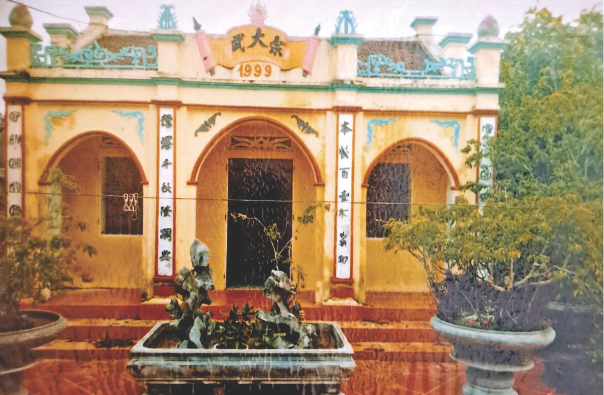
Nhà Từ Đường Vũ Tộc xây dựng lần thứ 2 năm 1999.
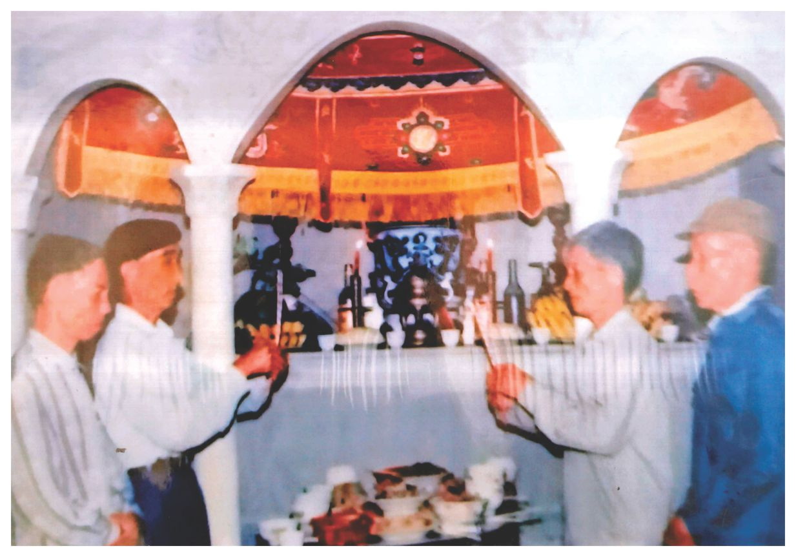
Đại diện con cháu Ngành 1, 4, 5 (Đời thứ 6) dâng hương ngày Giỗ Tổ.
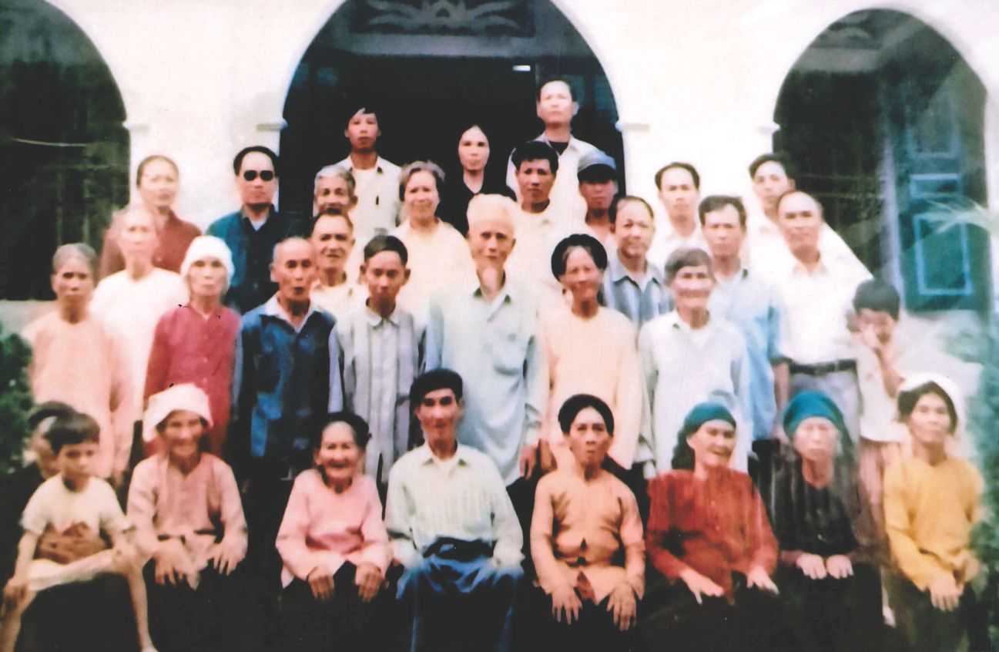
Đại diện hậu duệ Đời thứ 6 và thứ 7 trong ngày Giỗ Tổ.
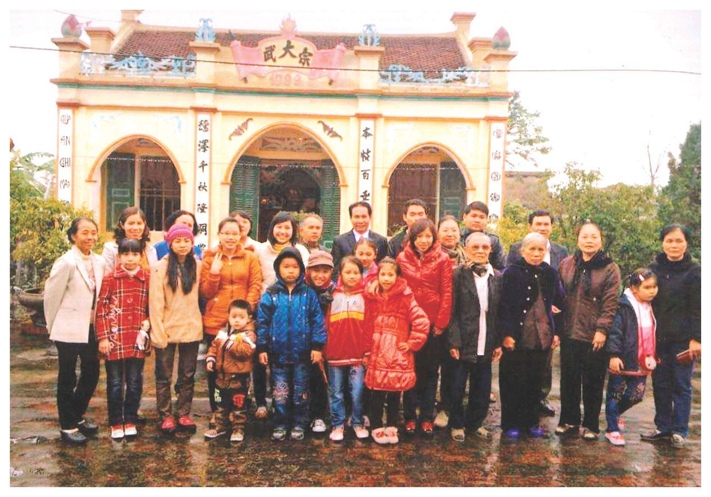
Đại diện hậu duệ (Ngành 1) chụp ảnh kỷ niệm Xuân 2013.
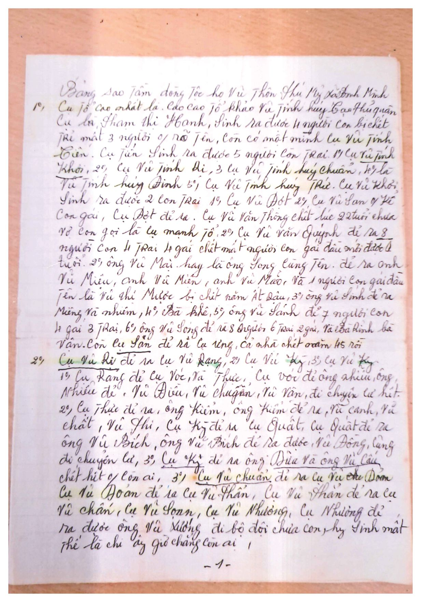
Bản di chúc của cụ Vũ Văn Sánh (Đời 6 - Ngành 1) - Mặt trước.
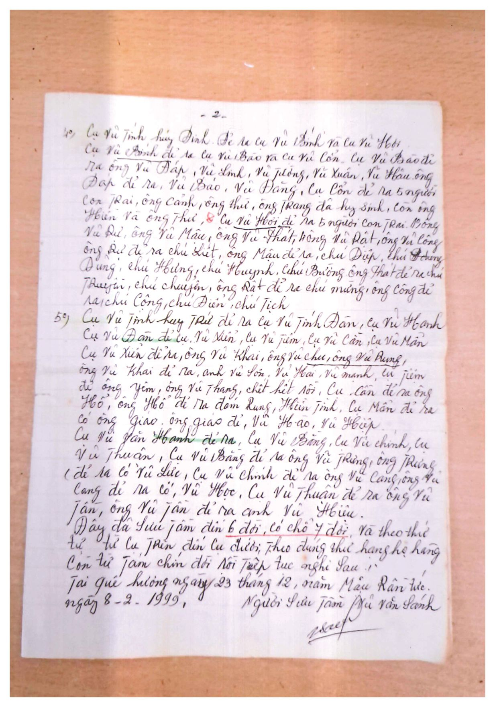
Bản di chúc của cụ Vũ Văn Sánh (Đời 6 - Ngành 1) - Mặt sau.
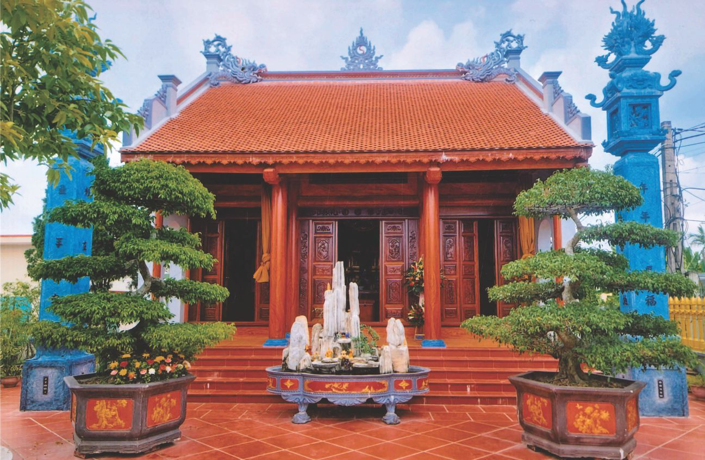
Nhà Từ Đường Vũ Tộc xây dựng lần thứ 3 năm 2020.
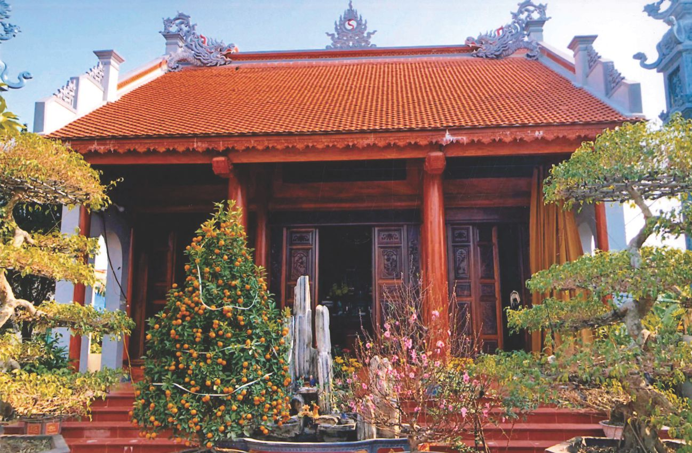
Nhà Từ Đường Vũ Tộc đón Xuân Tân Sửu 2021.
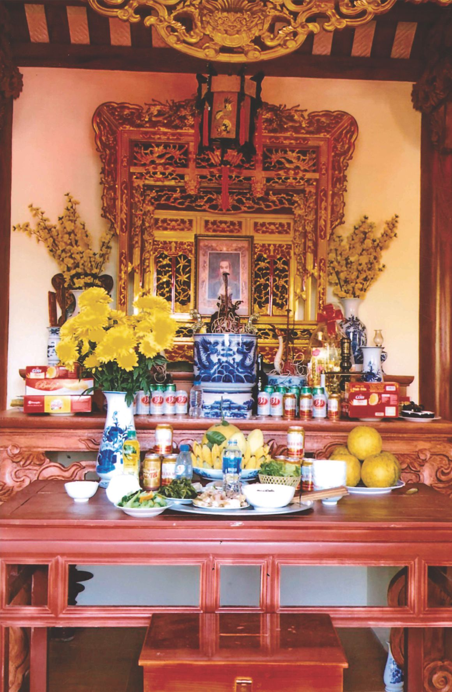
Hình ảnh Ngai thờ cúng Đức Thuỷ Tổ Vũ Tộc.
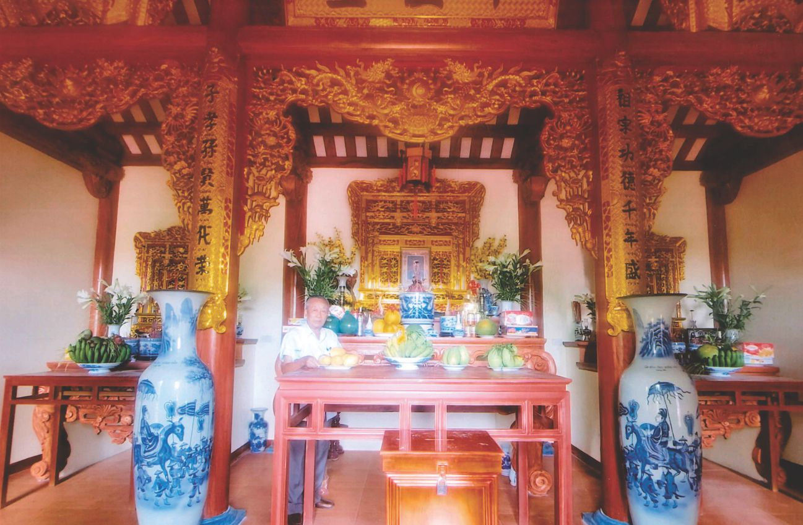
Quan cảnh bên trong Nhà Từ đường Vũ Tộc.
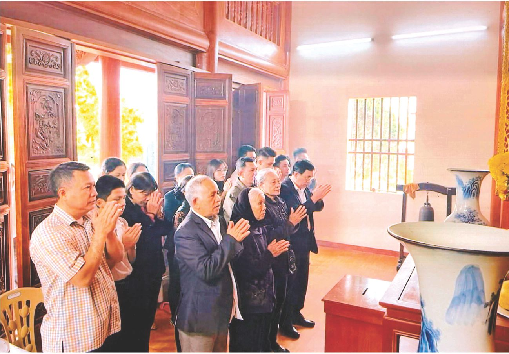
Đại diện hậu duệ (Ngành 1) dâng hương bái Tổ.
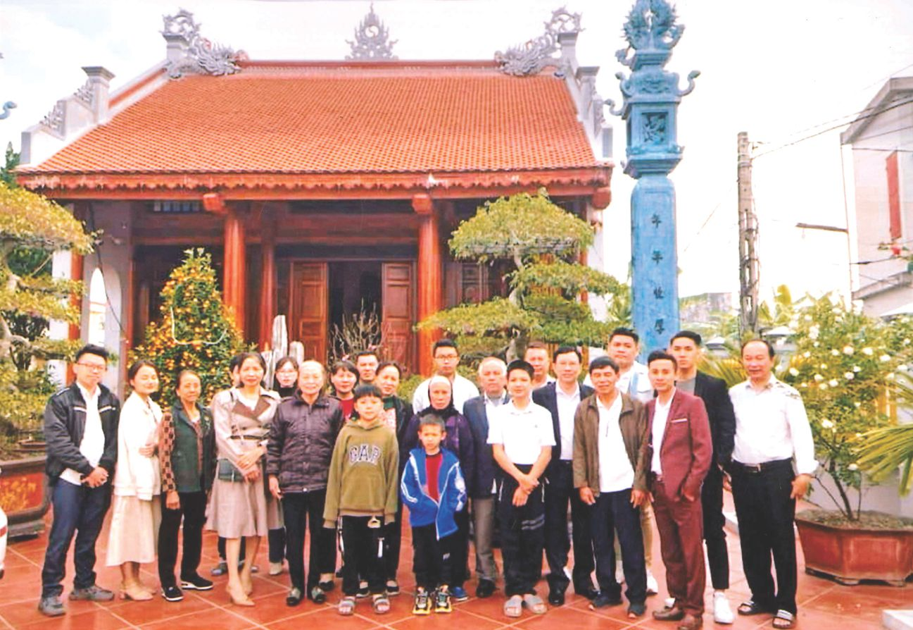
Đại diện hậu duệ (Ngành 1) chụp ảnh kỷ niệm Xuân 2023.
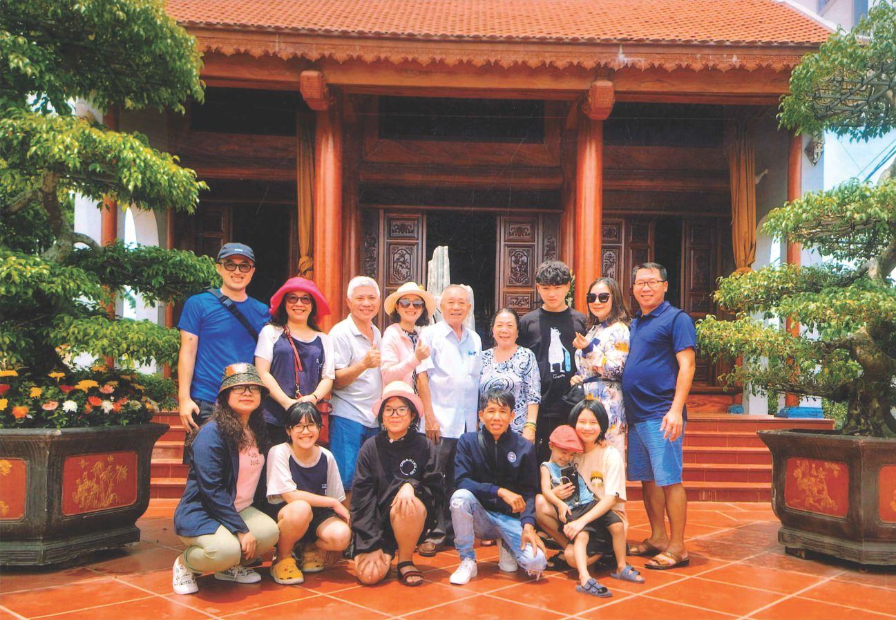
Đại diện hậu duệ Ngành 1 Tại TP.Vũng Tàu về khánh thành Nhà Từ Dường Vũ Tộc.
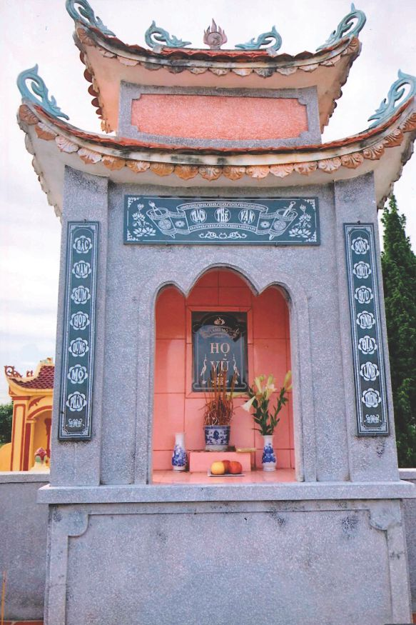
Lăng Mộ Tổ Họ Vũ tại Nghĩa trang làng Phú Mỹ.
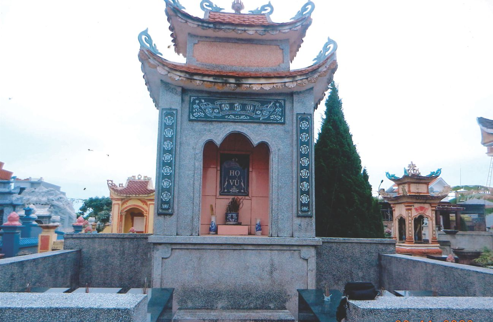
Toàn cảnh Lăng Mộ Tổ Họ Vũ tại Nghĩa trang làng Phú Mỹ.